LabVIEW handles many of the details that you must handle in a text-based programming language. One of the main challenges of a text-based language is memory usage. In a text-based language, you, the programmer, have to take care of allocating memory before you use it and deallocating it when you finish. You also must be careful not to write past the end of the memory you allocated in the first place. Failure to allocate memory or to allocate enough memory is one of the biggest mistakes programmers make in text-based languages. Inadequate memory allocation is also a difficult problem to debug.
The dataflow paradigm for LabVIEW removes much of the difficulty of managing memory. In LabVIEW, you do not allocate variables, nor assign values to and from them. Instead, you create a block diagram with connections representing the transition of data.
Functions that generate data take care of allocating the storage for that data. When data is no longer being used, the associated memory is deallocated. When you add new information to an array or a string, enough memory is automatically allocated to manage the new information.
This automatic memory handling is one of the chief benefits of LabVIEW. However, because it is automatic, you have less control of when it happens. If your program works with large sets of data, it is important to have some understanding of when memory allocation takes place. An understanding of the principles involved can result in programs with significantly smaller memory requirements. Also, an understanding of how to minimize memory usage also can help to increase VI execution speeds, because memory allocation and copying data can take a considerable amount of time.
Operating systems use virtual memory to allow applications to access more memory than what is available in physical RAM. The OS partitions physical RAM into blocks called pages. When an application or process assigns an address to a block of memory, the address does not refer to a direct location in physical RAM, but instead refers to memory in a page. The OS can swap these pages between physical RAM and the hard disk.
If an application or process needs to access a certain block or page of memory that is not in physical RAM, the OS can move a page of physical RAM that an application or process is not using to the hard disk and replace it with the required page. The OS keeps track of the pages in memory and translates virtual addresses to pages into real addresses in physical RAM when an application or process needs to access that memory.
The following image illustrates how two processes can swap pages in and out of physical RAM. For this example, Process A and Process B are running simultaneously.
|
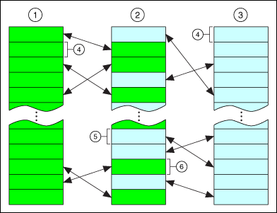 |
||
| 1��Process A�� | 3��Process B�� | 5��Page of memory from Process B�� |
| 2��Physical RAM�� | 4��Page of virtual memory�� | 6��Page of memory from Process A�� |
Because the number of pages an application or process uses depends on available disk space and not on available physical RAM, an application can use more memory than actually is available in physical RAM. The size of the memory addresses an application uses limits the amount of virtual memory that application can access.
LabVIEW (32-bit) uses 32-bit addresses and is large address aware. On 32-bit Windows, LabVIEW (32-bit) can access up to 2 GB of virtual memory by default. You can modify the Windows boot configuration settings to enable LabVIEW (32-bit) to access up to 3 GB of virtual memory. On 64-bit Windows, LabVIEW (32-bit) can access up to 4 GB of virtual memory by default.
LabVIEW (64-bit) can access up to 8 TB or 128 TB of virtual memory depending on the version of Windows. The actual size of virtual memory that LabVIEW (64-bit) can access also depends on the size of the physical RAM and the maximum paging file size.
A VI has the following four major components:
When a VI loads, the front panel, the code (if it matches the platform), and the data for the VI are loaded into memory. If the VI needs to be recompiled because of a change in platform or a change in the interface of a subVI, the block diagram is loaded into memory as well.
The VI also loads the code and data space of its subVIs into memory. Under certain circumstances, the front panel of some subVIs might be loaded into memory as well. For example, this can occur if the subVI uses Property Node, because Property Nodes manipulate state information for front panel controls.
An important point in the organization of VI components is that you generally do not use much more memory when you convert a section of your VI into a subVI. If you create a single, huge VI with no subVIs, you end up with the front panel, code, and data for that top-level VI in memory. However, if you break the VI into subVIs, the code for the top-level VI is smaller, and the code and data of the subVIs reside in memory. In some cases, you might see lower run-time memory usage.
Large VIs also take longer to edit. You can avoid this problem in the following ways:
|
Note��If the front panel or block diagram of a given VI is much larger than a screen, you might want to break it into subVIs to make it more accessible. |
In dataflow programming, you generally do not use variables. Dataflow models usually describe nodes as consuming data inputs and producing data outputs. A literal implementation of this model produces applications that can use very large amounts of memory with sluggish performance. Every function produces a copy of data for every destination to which an output is passed. LabVIEW improves on this implementation through inplaceness.
LabVIEW uses inplaceness to determine when to reuse memory and whether to make copies for each output terminal. When LabVIEW does not copy data from an input to an output, the data of the input and output is in-place.
You can use the Show Buffer Allocations window to identify where LabVIEW can create copies of data.
For example, in a more traditional approach to the compiler, the following block diagram uses two blocks of data memory, one for the input and one for the output.
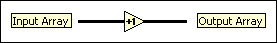
The input array and the output array contain the same number of elements, and the data type for both arrays is the same. Think of the incoming array as a buffer of data. Instead of creating a new buffer for the output, the compiler reuses the memory of the input buffer for the output buffer. This example of inplaceness saves memory and also results in faster execution because no memory allocation needs to take place at run time.
However, the compiler cannot reuse memory buffers in all cases, as shown in the following block diagram.
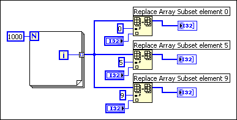
A signal passes a single source of data to multiple destinations. The Replace Array Subset function modifies the input array to produce the output array. In this case, the data for one of the functions is in-place and the output reuses the data for the input array, while the other outputs do not. Thus, the compiler creates new data buffers for two of the functions and copies the array data into the buffers. This block diagram uses about 12 KB (4 KB for the original array and 4 KB for each of the extra two data buffers).
Now, examine the following block diagram.
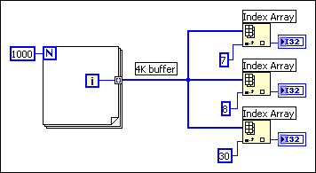
As before, the input branches to three functions. However, in this case the Index Array function does not modify the input array. If you pass data to multiple locations, all of which read the data without modifying it, LabVIEW does not make a copy of the data. As a result, all the data is in-place. This block diagram uses about 4 KB of memory.
Finally, consider the following block diagram.
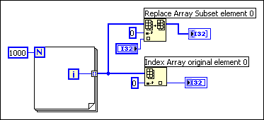
In this case, the input branches to two functions, one of which modifies the data. There is no dependency between the two functions. Therefore, you can predict that at least one copy needs to be made so the Replace Array Subset function can safely modify the data. In this case, however, the compiler schedules the execution of the functions in such a way that the function that reads the data executes first, and the function that modifies the data executes last. This way, the Replace Array Subset function reuses the incoming array buffer without generating a duplicate array, making the data for this function in-place. If the ordering of the nodes is important, make the ordering explicit by using either a sequence or an output of one node for the input of another.
In practice, the analysis of block diagrams by the compiler is not perfect. In some cases, the compiler might not be able to determine the optimal method for reusing block diagram memory.
The way you build a block diagram can prevent LabVIEW from reusing data buffers. Using a conditional indicator in a subVI prevents LabVIEW from optimizing data buffer usage. A conditional indicator is an indicator inside a Case structure or For Loop. Placing an indicator in a conditionally executed code path will break the flow of data through the system and LabVIEW will not reuse the data buffer from the input, but force a data copy into the indicator instead. When you place indicators outside of Case structures and For Loops, LabVIEW directly modifies the data inside the loop or structure and passes the data to the indicator instead of creating a data copy. You can create constants for alternate cases instead of placing indicators inside the Case structure.
You can determine memory usage using several methods.
To view memory usage for the current VI, select File�VI Properties and select Memory Usage from the top pull-down menu. Notice that the information does not include memory use of subVIs. You can use the Profile Performance and Memory window to monitor the memory used by all VIs in memory and identify a subVI with performance issues. The VI Profile Performance and Memory window keeps statistics on the minimum, maximum, and average number of bytes and blocks used by each VI per run.
|
Note�� To monitor accurate VI run-time performance, save all VIs without separate compiled code in the current version of LabVIEW for the following reasons:
|
Use the Show Buffer Allocations window to identify specific areas on the block diagram where LabVIEW allocates memory space in the form of a buffer.
|
Note��The Show Buffer Allocations window is available only in the LabVIEW Full and Professional Development Systems. |
Select Tools�Profile�Show Buffer Allocations to display the Show Buffer Allocations window. Place a checkmark next to the data type(s) you want to see buffers for and click the Refresh button. The black squares that appear on the block diagram indicate where LabVIEW creates buffers to allocate space for data.
The amount of memory LabVIEW allocates for each buffer is the same size as the largest data type. When you run a VI, LabVIEW might or might not use those buffers to store data. You cannot know whether LabVIEW makes a copy of the data because LabVIEW makes that decision at run time or the VI might depend on dynamic data.
If the VI needs memory for a buffer allocation, LabVIEW makes a data copy for the buffer. If LabVIEW is not sure whether the buffer needs a data copy, LabVIEW sometimes still makes a copy for the buffer.
|
Note��The Show Buffer Allocations window identifies only execution buffers with the use of the black squares on the block diagram. Using this window does not identify operation buffers on the front panel. |
Once you know where LabVIEW creates buffers, you might be able to edit the VI to reduce the amount of memory LabVIEW requires to run the VI. LabVIEW must allocate memory to run the VI, so you cannot eliminate all the buffers.
If you make a change to a VI that requires LabVIEW to recompile the VI, the black squares disappear because the buffer information might no longer be correct. Click the Refresh button on the Show Buffer Allocations window to recompile the VI and display the black squares. When you close the Show Buffer Allocations window, the black squares disappear.
|
Note��You also can use the LabVIEW Desktop Execution Trace Toolkit to monitor thread usage, memory leaks, and other aspects of LabVIEW programming. |
Select Help�About LabVIEW to view a statistic that summarizes the total amount of memory used by your application. This includes memory for VIs as well as memory the application uses. You can check this amount before and after execution of a set of VIs to obtain a rough idea of how much memory the VIs are using.
The main point of the previous section is that the compiler attempts to reuse memory intelligently. The rules for when the compiler can and cannot reuse memory are complex. In practice, the following rules can help you to create VIs that use memory efficiently:
 |
Tip��If a chart indicator is necessary, know that the chart history will retain a copy of the data it displays. This continues until the chart history is filled, then LabVIEW stops taking more memory. LabVIEW does not automatically clear the chart history when the VI restarts, so it helps to clear the chart history throughout the execution of the program. To do this, write empty arrays to the History Data attribute node for the chart. |
|
Note��LabVIEW does not typically open a subVI front panel when calling the subVI. |
Refer to the LabVIEW Style Checklist for more specific ideas on how to optimize the performance of a VI.
When a front panel is open, controls and indicators keep their own, private copy of the data they display.
The following block diagram shows the increment function, with the addition of front panel controls and indicators.
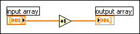
When you run the VI, the data of the front panel control is passed to the block diagram. The increment function reuses the input buffer. The indicator then makes a copy of the data for display purposes. Thus, there are three copies of the buffer.
This data protection of the front panel control prevents the case in which you enter data into a control, run the associated VI, and see the data change in the control as it is passed in-place to subsequent nodes. Likewise, data is protected in the case of indicators so that they can reliably display the previous contents until they receive new data.
With subVIs, you can use controls and indicators as inputs and outputs. The execution system makes a copy of the control and indicator data of the subVI in the following conditions:
For a Property Node to be able to read the chart history in subVIs with closed panels, the control or indicator needs to display the data passed to it. Because there are numerous other attributes like this, the execution system keeps subVI panels in memory if the subVI uses Property Nodes.
If a front panel uses front panel data logging or data printing, controls and indicators maintain copies of their data. In addition, panels are kept in memory for data printing so the panel can be printed.
If you set a subVI to display its front panel when called using the VI Properties dialog box or the SubVI Node Setup dialog box, the front panel loads into memory when you call the subVI. If you set the Close afterwards if originally closed item, LabVIEW removes the front panel from memory when the subVI finishes execution.
In general, a subVI can use data buffers from its caller as easily as if the block diagrams of the subVI were duplicated at the top level. In most cases, you do not use more memory if you convert a section of your block diagram into a subVI. For VIs with special display requirements, as described in the previous section, there might be some additional memory usage for front panels and controls.
Consider the following block diagram.
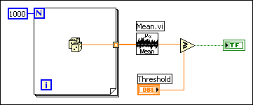
After the Mean VI executes, the array of data is no longer needed. Because determining when data is no longer needed can become very complicated in larger block diagrams, the execution does not deallocate the data buffers of a particular VI during its execution.
On macOS, if the execution system is low on memory, it deallocates data buffers used by any VI not currently executing. The execution system does not deallocate memory used by front panel controls, indicators, global variables, or uninitialized shift registers.
Now consider the same VI as a subVI of a larger VI. The array of data is created and used only in the subVI. On macOS, if the subVI is not executing and the system is low on memory, it might deallocate the data in the subVI. This is a case in which using subVIs can save on memory usage.
On Windows and Linux platforms, data buffers are not normally deallocated unless a VI is closed and removed from memory. Memory is allocated from the operating system as needed, and virtual memory works well on these platforms. Due to fragmentation, the application might appear to use more memory than it really does. As memory is allocated and freed, the application tries to consolidate memory usage so it can return unused blocks to the operating system.
You can use the Request Deallocation function to deallocate unused memory after the VI that contains this function runs. This function is only used for advanced performance optimizations. Deallocating unused memory can improve performance in some cases. However, aggressively deallocating memory can cause LabVIEW to reallocate space repeatedly rather than reusing an allocation. Use this function if your VI allocates a large amount of data but never reuses that allocation. When a top-level VI calls a subVI, LabVIEW allocates a data space of memory in which that subVI runs. When the subVI finishes running, LabVIEW does not deallocate the data space until the top-level VI finishes running or until the entire application stops, which can result in out-of-memory conditions and degradation of performance. Place the Request Deallocation function in the subVI you want to deallocate memory for. When you set the flag Boolean input to TRUE, LabVIEW reduces memory usage by deallocating the data space for the subVI.
If an output is the same size and data type as an input, and the input is not required elsewhere, the output can reuse the input buffer. As mentioned previously, in some cases even when an input is used elsewhere, the compiler and the execution system can order code execution in such a way that it can reuse the input for an output buffer. However, the rules for this are complex. Do not depend on them.
You can use the Show Buffer Allocations window to see if an output buffer reuses the input buffer. In the following block diagram, placing an indicator in each case of a Case structure breaks the flow of data because LabVIEW creates a copy of the data for each indicator. LabVIEW does not use the buffer it created for the input array but instead creates a copy of the data for the output array.
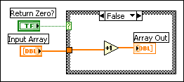
If you move the indicator outside the Case structure, the output buffer reuses the input buffer because LabVIEW does not need to make a copy of the data the indicator displays. Because LabVIEW does not require the value of the input array later in the VI, the increment function can directly modify the input array and pass it to the output array. In this situation, LabVIEW does not need to copy the data, so a buffer does not appear on the output array, as shown in the following block diagram.
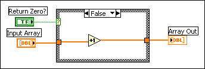
If you use consistent data types, LabVIEW can reuse the memory buffers allocated for an input when generating an output. This can improve the memory usage and execution time of the VI. However, if an input has a different data type from an output, the output cannot reuse the memory LabVIEW allocates for that input.
For example, if you add a 32-bit integer to a 16-bit integer, LabVIEW coerces the 16-bit integer to a 32-bit integer. The compiler creates a new buffer for the coerced data, and LabVIEW places a coercion dot on the Add function. In this example, LabVIEW can use the 32-bit integer input for the output buffer, assuming the input meets all the other requirements. However, because LabVIEW coerces the 16-bit integer, LabVIEW cannot reuse the memory allocated for that input.
To minimize memory usage, use consistent data types wherever possible. Using consistent data types produces fewer copies of data that result when LabVIEW coerces data to a larger size. In some applications, you also may consider using smaller data types to minimize data usage. For example, you may consider using four-byte, single-precision numbers instead of eight-byte, double-precision numbers. However, to avoid unnecessary coercions, match the data types of objects wired to a subVI with the data type the subVI expects.
When you need to generate data of a specific data type, you may have to convert data types on your block diagram. However, you can optimize memory usage by converting data types using Conversion functions before LabVIEW creates large arrays.
In the following example, the output data needs to be of the single-precision, floating-point data type to match the data type of an input of another VI. LabVIEW creates an array of 1,000 random values and adds the array to a scalar value. LabVIEW places a coercion dot on the Add function because LabVIEW coerces the single-precision, floating-point scalar data type to match the random double-precision, floating-point numbers.
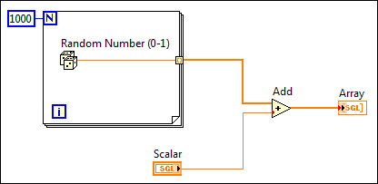
The following block diagram shows an attempt to correct this problem by converting the array of double-precision, floating-point numbers using a To Single Precision Float function.
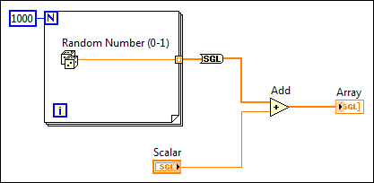
Because the function still converts the data type of the large array after LabVIEW creates the array, the VI uses the same amount of memory as the example with the coercion dots.
The following block diagram illustrates how to optimize memory usage and execution speed by converting the random number before LabVIEW creates the array.
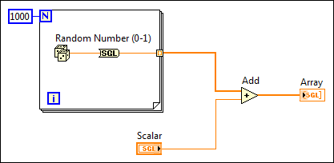
When you cannot avoid conversions, you can use a Conversion function before LabVIEW creates a large array to avoid converting the large data buffer allocated for the array from one data type to another. Converting data before LabVIEW creates a large array optimizes the memory usage of a VI.
If the size of an output is different from the size of an input, the output does not reuse the input data buffer. This is the case for functions such as Build Array, Concatenate Strings, and Array Subset, which increase or decrease the size of an array or string. When working with arrays and strings, avoid constantly using these functions, because your program uses more data memory and executes more slowly because it is constantly copying data.
Consider the following block diagram, which is used to create an array of data. This block diagram creates an array in a loop by constantly calling Build Array to concatenate a new element. The input array is reused by Build Array. The VI continually resizes the buffer in each iteration to make room for the new array and appends the new element. The resulting execution speed is slow, especially if the loop is executed many times.
|
Note��When you manipulate arrays, clusters, waveforms, and variants, you can use the In Place Element structure to improve memory usage in VIs. |
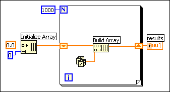
If you want to add a value to the array with every iteration of the loop, you can see the best performance by using auto-indexing on the edge of a loop. With For Loops, the VI can predetermine the size of the array (based on the value wired to N), and resize the buffer only once.
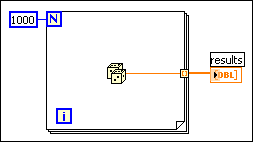
With While Loops, auto-indexing is not quite as efficient, because the end size of the array is not known. However, While Loop auto-indexing avoids resizing the output array with every iteration by increasing the output array size in large increments. When the loop is finished, the output array is resized to the correct size. The performance of While Loop auto-indexing is nearly identical to For Loop auto-indexing.
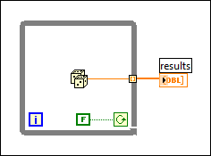
Auto-indexing assumes you are going to add a value to the resulting array with each iteration of the loop. If you must conditionally add values to an array but can determine an upper limit on the array size, you might consider preallocating the array and using Replace Array Subset to fill the array.
When you finish filling the array values, you can resize the array to the correct size. The array is created only once, and Replace Array Subset can reuse the input buffer for the output buffer. The performance of this is very similar to the performance of loops using auto-indexing. If you use this technique, be careful the array in which you are replacing values is large enough to hold the resulting data, because Replace Array Subset does not resize arrays for you.
An example of this process is shown in the following block diagram.
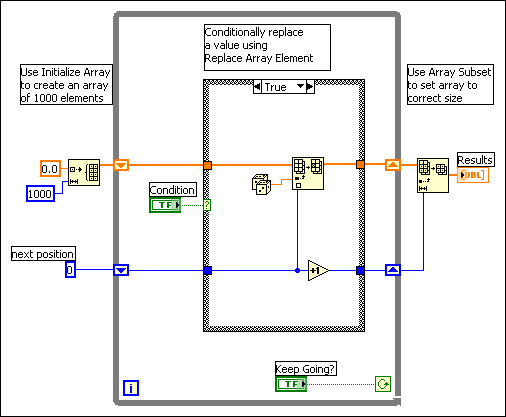
You can use the Match Pattern function to search a string for a pattern. Depending on how you use it, you might slow down performance by unnecessarily creating string data buffers.
Assuming you want to match an integer in a string, you can use [0�9]+ as the regular expression input to this function. To create an array of all integers in a string, use a loop and call Match Regular Expression repeatedly until the offset value returned is �1.
The following block diagram is one method for scanning for all occurrences of integers in a string. It creates an empty array and then searches the remaining string for the numeric pattern with each iteration of the loop. If the pattern is found (offset is not �1), this block diagram uses Build Array to add the number to a resulting array of numbers. When there are no values left in the string, Match Regular Expression returns �1 and the block diagram completes execution.
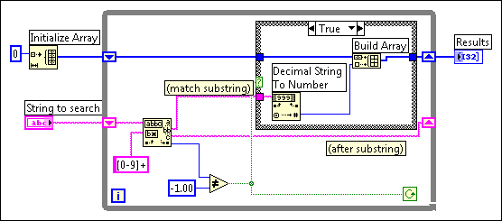
One problem with this block diagram is that it uses Build Array in the loop to concatenate the new value to the previous value. Instead, you can use auto-indexing to accumulate values on the edge of the loop. Notice you end up seeing an extra unwanted value in the array from the last iteration of the loop where Match Regular Expression fails to find a match. A solution is to use Array Subset to remove the extra unwanted value. This is shown in the following block diagram.
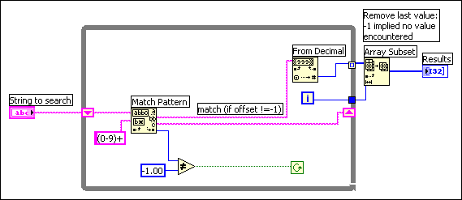
The other problem with this block diagram is that you create an unnecessary copy of the remaining string every time through the loop. Match Regular Expression has an input you can use to indicate where to start searching. If you remember the offset from the previous iteration, you can use this number to indicate where to start searching on the next iteration. This technique is shown in the following block diagram.
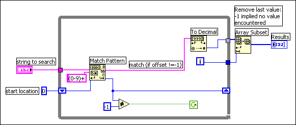
One of the points made in the previous example is that hierarchical data structures, such as clusters or arrays of clusters containing large arrays or strings, cannot be manipulated efficiently. This section explains why this is so and describes strategies for choosing more efficient data types.
The problem with complicated data structures is that it is difficult to access and change elements within a data structure without causing copies of the elements you are accessing to be generated. If these elements are large, as in the case where the element itself is an array or string, these extra copies use more memory and the time it takes to copy the memory.
You can generally manipulate scalar data types very efficiently. Likewise, you can efficiently manipulate small strings and arrays where the element is a scalar. In the case of an array of scalars, the following code shows what you do to increment a value in an array.
|
Note��When you manipulate arrays, clusters, waveforms, and variants, you can use the In Place Element structure to improve memory usage in VIs. Many LabVIEW operations require LabVIEW to copy and maintain data values in memory, thereby decreasing execution speed and increasing memory usage. The In Place Element structure performs common LabVIEW operations without LabVIEW making multiple copies of the data values in memory. Instead, the In Place Element structure operates on data elements in the same memory location and returns those elements to the same location in the array, cluster, variant, or waveform. Because LabVIEW returns the data elements to the same location in memory, the LabVIEW compiler does not have to make extra copies of the data in memory. |
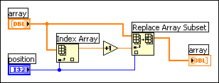
This is quite efficient because it is not necessary to generate extra copies of the overall array. Also, the element produced by the Index Array function is a scalar, which can be created and manipulated efficiently.
The same is true of an array of clusters, assuming the cluster contains only scalars. In the following block diagram, manipulation of elements becomes a little more complicated, because you must use Unbundle and Bundle. However, because the cluster is probably small (scalars use very little memory), there is no significant overhead involved in accessing the cluster elements and replacing the elements back into the original cluster.
The following block diagram shows the efficient pattern for unbundling, operating, and bundling again. The wire from the data source should have only two destinations � the Unbundle function input, and the middle terminal on the Bundle function. LabVIEW recognizes this pattern and is able to generate better-performing code.
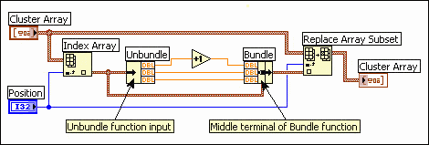
If you have an array of clusters where each cluster contains large sub-arrays or strings, indexing and changing the values of elements in the cluster can be more expensive in terms of memory and speed.
When you index an element in the overall array, a copy of that element is made. Thus, a copy of the cluster and its corresponding large subarray or string is made. Because strings and arrays are of variable size, the copy process can involve memory allocation calls to make a string or subarray of the appropriate size, in addition to the overhead actually copying the data of a string or subarray. This might not be significant if you only plan to do it a few times. However, if your application centers around accessing this data structure frequently, the memory and execution overhead might add up quickly.
The solution is to look at alternative representations for your data. The following three case studies present three different applications, along with suggestions for the best data structures in each case.
Consider an application in which you want to record the results of several tests. In the results, you want a string describing the test and an array of the test results. One data type you might consider using to store this information is shown in the following front panel.
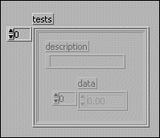
To change an element in the array, you must index an element of the overall array. Now, for that cluster you must unbundle the elements to reach the array. You then replace an element of the array and store the resulting array in the cluster. Finally, you store the resulting cluster into the original array. An example of this is shown in the following block diagram.
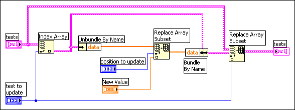
Each level of unbundling/indexing might result in a copy of that data being generated. Notice a copy is not necessarily generated. Copying data is costly in terms of both time and memory. The solution is to try to make the data structures as flat as possible. For example, in this case study break the data structure into two arrays. The first array is the array of strings. The second array is a 2D array, where each row is the results of a given test. This result is shown in the following front panel.
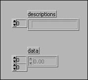
Given this data structure, you can replace an array element directly using the Replace Array Subset function, as shown in the following block diagram.
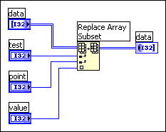
Here is another application in which you want to maintain a table of information. In this application, you want the data to be globally accessible. This table might contain settings for an instrument, including gain, lower and upper voltage limits, and a name used to refer to the channel.
To make the data accessible throughout your application, you might consider creating a set of subVIs to access the data in the table, such as the following subVIs, the Change Channel Info VI and the Remove Channel Info VI.
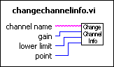
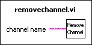
The following sections present three different implementations for these VIs.
With this set of functions, there are several data structures to consider for the underlying table. First, you might use a global variable containing an array of clusters, where each cluster contains the gain, lower limit, upper limit, and the channel name.
As described in the previous section, this data structure is difficult to manipulate efficiently, because generally you must go through several levels of indexing and unbundling to access your data. Also, because the data structure is a conglomeration of several pieces of information, you cannot use the Search 1D Array function to search for a channel. You can use Search 1D Array to search for a specific cluster in an array of clusters, but you cannot use it to search for elements that match on a single cluster element.
As with the previous case study, choose to keep the data in two separate arrays. One contains the channel names. The other contains the channel data. The index of a given channel name in the array of names is used to find the corresponding channel data in the other array.
Notice that because the array of strings is separate from the data, you can use the Search 1D Array function to search for a channel.
In practice, if you are creating an array of 1,000 channels using the Change Channel Info VI, this implementation is roughly twice as fast as the previous version. This change is not very significant because there is other overhead affecting performance.
When you read from a global variable, a copy of the data of the global variable is generated. Thus, a complete copy of the data of the array is being generated each time you access an element. The next method shows an even more efficient method that avoids this overhead.
There is an alternative method for storing global data, and that is to use an uninitialized shift register. Essentially, if you do not wire an initial value, a shift register remembers its value from call to call.
The LabVIEW compiler handles access to shift registers efficiently. Reading the value of a shift register does not necessarily generate a copy of the data. In fact, you can index an array stored in a shift register and even change and update its value without generating extra copies of the overall array. The problem with a shift register is only the VI that contains the shift register can access the shift register data. On the other hand, the shift register has the advantage of modularity.
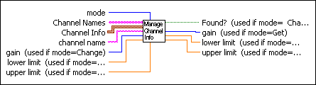
You can make a single subVI with a mode input that specifies whether you want to read, change, or remove a channel, or whether you want to zero out the data for all channels.
The subVI contains a While Loop with two shift registers�the channel data, and one for the channel names. Neither of these shift registers is initialized. Then, inside the While Loop you place a Case structure connected to the mode input. Depending on the value of the mode, you might read and possibly change the data in the shift register.
Following is an outline of a subVI with an interface that handles these three different modes. Only the Change Channel Info code is shown.
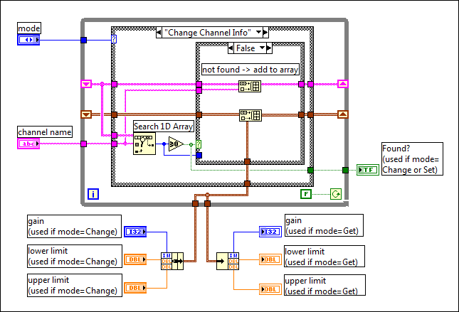
For 1,000 elements, this implementation is twice as fast as the previous implementation, and four times faster than the original implementation.
The previous case study looked at an application in which the table contained mixed data types, and the table might change frequently. In many applications, you have a table of information that is fairly static once created. The table might be read from a spreadsheet file. Once read into memory, you mainly use it to look up information.
In this case, your implementation might consist of the following two functions, Initialize Table From File and Get Record From Table.
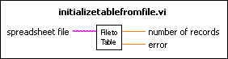
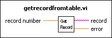
One way to implement the table is to use a two-dimensional array of strings. Notice the compiler stores each string in an array of strings in a separate block of memory. If there are a large number of strings (for example, more than 5,000 strings), you might put a load on the memory manager. This load can cause a noticeable loss in performance as the number of individual objects increases.
An alternative method for storing a large table is to read the table in as a single string. Then build a separate array containing the offsets of each record in the string. This changes the organization so that instead of having potentially thousands of relatively small blocks of memory, you instead have one large block of memory (the string) and a separate smaller block of memory (the array of offsets).
This method might be more complicated to implement, but it can be much faster for large tables.